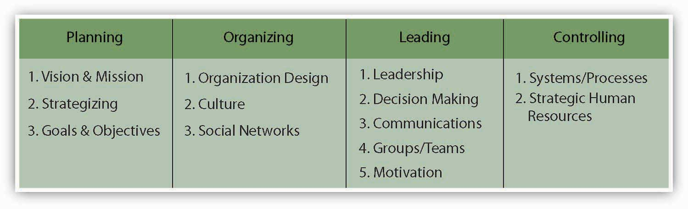

Reading this chapter will help you do the following:
Figure 11.2 The P-O-L-C Framework
While leadership is a combination of many things, your characterization of particular leaders and their leadership effectiveness is often a reflection of the decisions that they have made or not made. In this chapter, you’ll learn that while decisions are made every day within organizations, the process does not always go as well as it could. Understanding how decisions are made, how they can be biased, and how to make the decision-making process run smoothly will help you to be a more effective manager. But first, let’s define decision making.